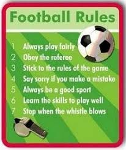
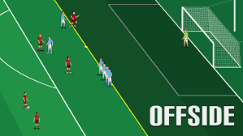
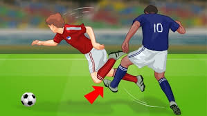
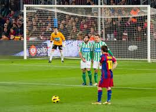

Understanding the basic rules of football is essential for enjoying the game and playing it correctly. Here are some fundamental rules every player should know.
Basic Football Rules

Offside Rule

The offside rule is one of the most important and sometimes confusing rules in football. A player is in an offside position if they are nearer to the opponent's goal line than both the ball and the second-last opponent when the ball is played to them, unless they are in their own half of the field.
Fouls and Misconduct

Fouls and misconduct are actions by players that are deemed unfair by the referee. These include kicking, tripping, pushing, and handling the ball deliberately. Players committing such actions may receive a yellow or red card, depending on the severity of the offense.
Free Kicks and Penalties

Free kicks and penalties are awarded for various fouls and misconduct. A direct free kick allows the player to score directly from the kick, while an indirect free kick requires the ball to touch another player before a goal can be scored. Penalty kicks are awarded for fouls committed within the penalty area.